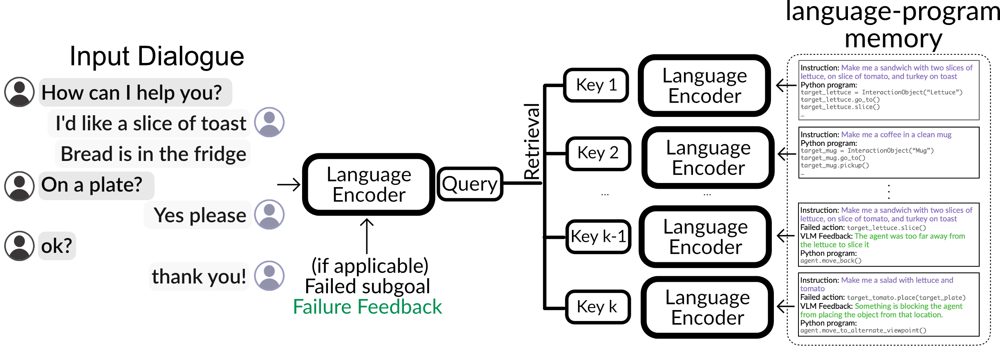
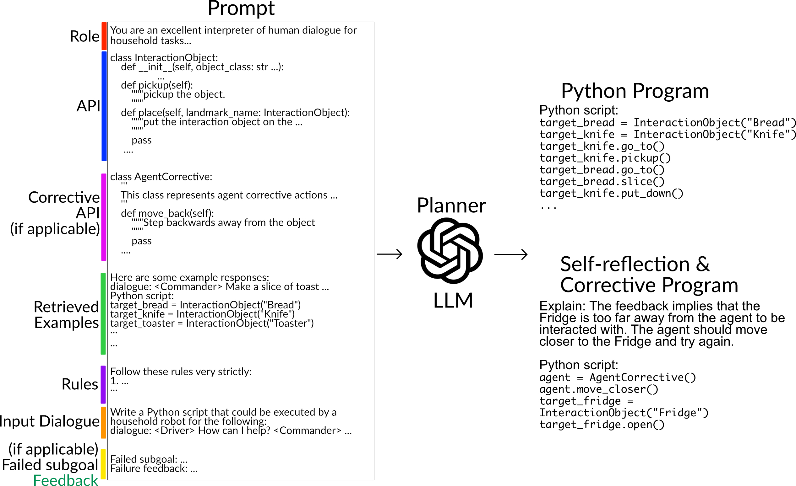
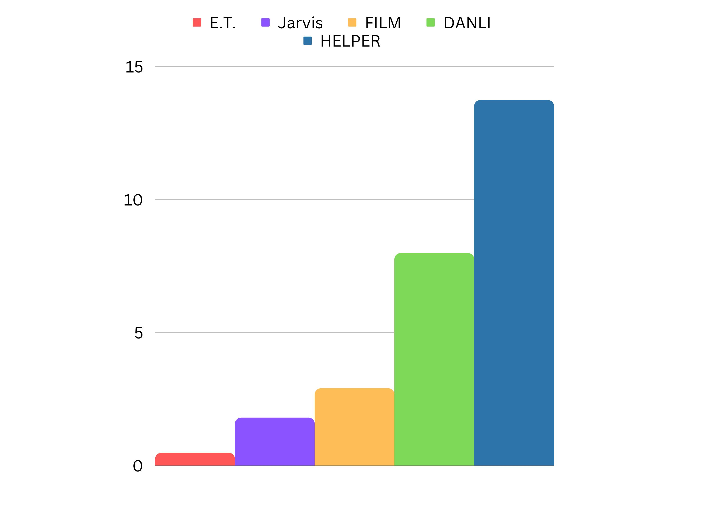

Open-Ended Instructable Embodied Agents with Memory-Augmented Large Language Models
Gabriel Sarch Yue Wu Michael Tarr Katerina Fragkiadaki
Carnegie Mellon University
EMNLP 2023
 Paper
Paper
Abstract
Pre-trained and frozen LLMs can effectively map simple scene re-arrangement instructions to programs over a robot's visuomotor functions through appropriate few-shot example prompting. To parse open-domain natural language and adapt to a user's idiosyncratic procedures, not known during prompt engineering time, fixed prompts fall short. In this paper, we introduce HELPER, an embodied agent equipped with as external memory of language-program pairs that parses free-form human-robot dialogue into action programs through retrieval-augmented LLM prompting: relevant memories are retrieved based on the current dialogue, instruction, correction or VLM description, and used as in-context prompt examples for LLM querying. The memory is expanded during deployment to include pairs of user's language and action plans, to assist future inferences and personalize them to the user's language and routines. HELPER sets a new state-of-the-art in the TEACh benchmark in both Execution from Dialog History (EDH) and Trajectory from Dialogue (TfD), with 1.7x improvement over the previous SOTA for TfD.
Memory-Augmented Prompting
A key component of HELPER is its memory of language-program pairs to generate tailored prompts for pretrained LLMs based on the current language context.
The retrieved examples are added to the LLM prompt, which aids in parsing diverse, and user-specific linguistic inputs for planning, re-planning during failures, and interpreting human feedback.
Results
Household Task Execution from Messy Dialogue
We set a new state-of-the-art in the TEACh benchmark, where the agent is given a messy dialogue segment and is tasked to infer the sequence of actions from RGB. HELPER improves Trajectory from Dialogue (TfD) task success by 1.7x and goal-condition success by 2.1x over existing works with minimal in-domain finetuning.
TEACh TfD Validation Unseen Performance
Make a salad demo with module visualizations
Error correction demo with module visualizations
User Feedback
Gathering user feedback can improve a home robot’s performance, but frequently requesting feedback on a task can diminish the overall user experience. Thus, we enable HELPER to elicit sparse user feedback only when it has completed execution of the program from the initial user input. HELPER improves an additional 1.3X in task success when incorporating just two user feedbacks.
Demo: Clean all cookware with user feedback
(skip to 0:41 for user feedback saying HELPER
missed cleaning the pot)
Demo: Make breakfast with user feedback
(skip to 2:54 for user feedback saying did not put
tomato & lettuce slice on plate)
User Personalization
HELPER expands its memory of programs with successful executions of user specific procedures; it then recalls them and adapt them in future interactions with the user, allowing for user-personalized references.
We test HELPER on its ability retrieve a personalized routines and adapt them to accomodate zero, one, two, or three changes (10 each) from the original plan. Of the 40 inputs tested, HELPER successfully recalled and adapted all but three personalized routines.
An example sample from the evaluation is shown below of the original instruction used to generate the personalized program and add it to memory, evaluation instructions for zero, one, two, and three requested changes of the routine.
Original Instruction: "Make me a salad. The name of this salad is called the David salad. The salad has two slices of tomato and three slices of lettuce on a clean plate."
No Change Instruction: "Make me the David salad"
One Change Instruction: "Make me the David salad with a slice of potato"
Two Change Instruction: "Make me the David salad but add a slice of potato and add one slice of lettuce"
Three Change Instruction: "Make me the David salad and add a slice of potato, add one slice of lettuce, and bring a fork with it"
See our paper for more!
Citation
@proceedings{findings-2023-findings-association-linguistics-emnlp,
title = "Findings of the Association for Computational Linguistics: EMNLP 2023",
editor = "Sarch, Gabriel and
Wu, Yue and
Tarr, Michael and
Fragkiadaki, Katerina",
month = dec,
year = "2023",
publisher = "Association for Computational Linguistics",
}